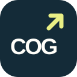

Partir do material certo
Identificar o vídeo, revisar a capa e preparar uma descrição coerente com o conteúdo original.

COGPublicaçõesESTÚDIO COG / FERRAMENTA INTERNA
Do vídeo original à publicação autorizada: um processo organizado para cuidar da capa, da descrição e de cada etapa do envio.
Materiais originais preservados. Ação final conforme o pedido.
A história e os materiais do episódio.
Contexto fiel, clareza e identidade.
Conteúdo, destino e autorização.
Envio e conferência do resultado.
O PROJETO
O COG Publicações apoia o trabalho do Estúdio COG nas contas que administra. Este site apresenta o projeto, seus termos e o tratamento de dados. O uso da ferramenta é interno.
COMO FUNCIONA
A preparação e a publicação têm autorizações diferentes. O processo respeita o escopo solicitado em cada execução.
Identificar o vídeo, revisar a capa e preparar uma descrição coerente com o conteúdo original.
Verificar o destino e a intenção do pedido. Conteúdo gerado com IA deve receber a identificação aplicável.
Conferir o estado retornado pela plataforma e registrar pendências. Um upload aceito não basta para confirmar a publicação.
INTEGRAÇÕES
O fluxo interno utiliza as APIs oficiais da Meta para operações solicitadas no Facebook e no Instagram. Cada execução depende de credencial válida, permissões e confirmação do destino.
Novas integrações estão em configuração e avaliação. A existência deste site não representa aprovação de acesso por qualquer plataforma.
Entenda o tratamento de dadosCONTATO DIRETO
O canal de contato do projeto é o e-mail abaixo.